KarkiVerse.
A little corner of the internet
made by Sarwagya Karki.

FIGURE STUDY / 07SCROLL TO EXPLORE01 — 05
01 / ABOUT
I’m Sarwagya Karki. This site has my photos from around Dharan, some games, a text-to-speech tool and KarkiAI.
A little more about me ↗02 / WORLDFOUR WAYS IN
01My LifePlaces and moments from around Dharan.↗02GamesSnake, Flappy Bird, 2048 and Rock Paper Scissors.↗03VoiceType something and hear it read aloud.↗04KarkiAIAsk questions by typing or talking.↗03 / ELSEWHERE